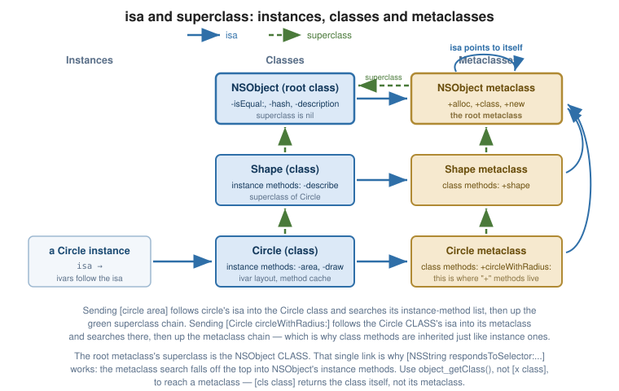

The Objective-C Runtime
|
This content was generated with the assistance of AI and should be verified against the official documentation before being relied on in production. |
The Objective-C runtime is a C library (libobjc) that is linked into and active inside every Objective-C
process. It owns the class and metaclass tables, performs every message send, and exposes a C API that lets
you inspect and modify the class hierarchy while the program runs. Understanding it turns a number of
Objective-C’s apparently magical features — KVO, categories, NSCoding, test mocks — into ordinary
mechanisms.
objc_msgSend and the Dispatch Path
Every message send compiles to a call into the runtime:
[receiver doSomethingWith:arg];
// becomes, in effect:
objc_msgSend(receiver, @selector(doSomethingWith:), arg);objc_msgSend is hand-written assembly, tuned to be as close to a direct call as dynamic dispatch allows.
Its steps:
-
Is the receiver
nil? If so, return zero immediately. This is where "messages tonildo nothing" actually lives. -
Follow the receiver’s
isato its class. -
Look in the class’s method cache, a hash table keyed by selector. On a hit — the overwhelmingly common case in steady-state code — jump straight to the
IMP. -
On a miss, search the class’s method list, then its superclass’s, and so on up to
NSObject. Cache the result and jump. -
If nothing is found, enter the forwarding machinery (see Dynamic Method Resolution and Forwarding).
Related entry points exist for different return types — objc_msgSend_stret for large structs,
objc_msgSendSuper for super sends, and objc_msgSend_fpret on some architectures — but they all follow
the same path.
The flowchart of this process is in Messaging and Selectors.
Classes, Metaclasses and isa
Every Objective-C object begins with an isa pointer to its class. Since a class is itself an object that
receives messages ([NSString alloc]), a class needs an isa too — and it points to the class’s
metaclass, which holds the class methods.

The complete set of rules, which the figure shows:
-
An instance's
isapoints to its class. Instance methods live there. -
A class's
isapoints to its metaclass. Class methods live there. -
A metaclass's
isapoints to the root metaclass (`NSObject’s metaclass). -
The root metaclass's
isapoints to itself, terminating the chain. -
superclasspointers run in parallel: class → superclass, metaclass → super-metaclass, and the root metaclass’s superclass is the root class,NSObject— which is why[NSString respondsToSelector:]works even thoughrespondsToSelector:is an instance method ofNSObject.
Class cls = [NSString class]; // NSString
Class meta = object_getClass(cls); // NSString's metaclass
BOOL isMeta = class_isMetaClass(meta); // YES
Class rootMeta = object_getClass(object_getClass([NSObject class])); // the root metaclassNote object_getClass(obj) versus [obj class]: for an instance they agree, but for a class object
[cls class] returns the class itself while object_getClass(cls) returns its metaclass. When writing
runtime code, use the C function.
The modern runtime also uses a non-fragile ivar layout: ivar offsets are resolved at load time rather than compiled in, so adding an ivar to a framework superclass does not break subclasses compiled against the old version. This is why you can safely subclass Apple’s classes across OS releases.
The Runtime API
#import <objc/runtime.h>
#import <objc/message.h>Classes
Class cls = objc_getClass("NSString"); // or NSClassFromString(@"NSString")
const char *name = class_getName(cls); // "NSString"
Class super = class_getSuperclass(cls); // NSObject
size_t size = class_getInstanceSize(cls);
// Create a class at run time, register it, and (later) dispose of it.
Class dynamic = objc_allocateClassPair([NSObject class], "MyDynamicClass", 0);
class_addMethod(dynamic, @selector(hello), (IMP)helloIMP, "v@:");
objc_registerClassPair(dynamic);
id instance = [[dynamic alloc] init];
// Enumerate every class loaded in the process.
unsigned int count = 0;
Class *all = objc_copyClassList(&count);
free(all); // you own the bufferMethods
Method m = class_getInstanceMethod(cls, @selector(length));
SEL sel = method_getName(m);
IMP imp = method_getImplementation(m);
const char *types = method_getTypeEncoding(m); // "Q16@0:8"
// Add a method to an existing class.
class_addMethod(cls, @selector(newThing), (IMP)newThingIMP, "v@:");
// Replace one (adds it if absent; returns the previous IMP).
IMP previous = class_replaceMethod(cls, @selector(thing), (IMP)myIMP, "v@:");
// Enumerate a class's own methods (NOT inherited ones).
unsigned int n = 0;
Method *methods = class_copyMethodList(cls, &n);
for (unsigned int i = 0; i < n; i++) {
NSLog(@"%@", NSStringFromSelector(method_getName(methods[i])));
}
free(methods); // always free the returned bufferEvery copy…List function returns a malloc’d buffer that you must `free — ARC does not manage it.
Ivars and Properties
Ivar ivar = class_getInstanceVariable(cls, "_name");
const char *ivarName = ivar_getName(ivar);
const char *ivarType = ivar_getTypeEncoding(ivar);
ptrdiff_t offset = ivar_getOffset(ivar);
id value = object_getIvar(obj, ivar); // read directly, bypassing accessors
object_setIvar(obj, ivar, newValue);
objc_property_t prop = class_getProperty(cls, "name");
const char *attrs = property_getAttributes(prop); // "T@\"NSString\",C,N,V_name"
unsigned int n = 0;
objc_property_t *props = class_copyPropertyList(cls, &n);
for (unsigned int i = 0; i < n; i++) {
NSLog(@"%s", property_getName(props[i]));
}
free(props);This is exactly how a JSON-mapping library, an ORM or NSCoding boilerplate generator discovers what to
encode — enumerate the properties, read each value by key, write it out.
Method Swizzling
Swizzling exchanges two methods' implementations at run time. It is the runtime’s most-abused feature, and it is presented here with its warnings attached.
#import <objc/runtime.h>
@implementation UIViewController (Logging)
+ (void)load {
static dispatch_once_t onceToken;
dispatch_once(&onceToken, ^{
Class cls = [self class];
SEL originalSelector = @selector(viewWillAppear:);
SEL swizzledSelector = @selector(my_viewWillAppear:);
Method original = class_getInstanceMethod(cls, originalSelector);
Method swizzled = class_getInstanceMethod(cls, swizzledSelector);
// If the class only INHERITS the original, add it first, so we do not
// accidentally swizzle the superclass for every other subclass too.
BOOL didAdd = class_addMethod(cls,
originalSelector,
method_getImplementation(swizzled),
method_getTypeEncoding(swizzled));
if (didAdd) {
class_replaceMethod(cls,
swizzledSelector,
method_getImplementation(original),
method_getTypeEncoding(original));
} else {
method_exchangeImplementations(original, swizzled);
}
});
}
- (void)my_viewWillAppear:(BOOL)animated {
// NOT infinite recursion: after the exchange, this name refers to the ORIGINAL.
[self my_viewWillAppear:animated];
NSLog(@"%@ will appear", NSStringFromClass([self class]));
}
@endThe apparent self-call is the crux: once the implementations are exchanged, my_viewWillAppear: names the
original implementation, so calling it runs the original behaviour. Omitting that call silently removes the
framework’s own work.
When Not to Swizzle
Almost always. The costs are real and mostly invisible until something breaks:
-
It is global. Every instance in the process is affected, including inside frameworks you did not write.
-
Order matters and is undefined. Two libraries swizzling the same method interact unpredictably.
-
It is invisible in a stack trace and in the source, making the resulting bugs very hard to locate.
-
It is fragile across OS versions, since the method you patched may change or disappear.
-
+loadruns very early, before most of the app is initialised, so mistakes there are hard to debug. (+initializeis safer where it suffices, since it runs lazily — but a category implementing+initializereplaces the class’s own.)
Legitimate uses are narrow: analytics and logging in an app you fully control, test instrumentation, and debugging aids. Never ship a library that swizzles — you are modifying the behaviour of every application that links you. Prefer subclassing, categories (for adding), delegation, or dependency injection.
Type Encodings and @encode
The runtime describes types as compact strings, used by NSInvocation, forwarding and archiving:
@encode(int); // "i"
@encode(double); // "d"
@encode(id); // "@"
@encode(SEL); // ":"
@encode(void); // "v"
@encode(char *); // "*"
@encode(BOOL); // "B" (or "c" where BOOL is signed char)
@encode(NSRange); // "{_NSRange=QQ}"A method’s encoding is returnType followed by the argument types, always beginning with the two hidden
arguments self (@) and _cmd (:):
| Method | Encoding |
|---|---|
|
|
|
|
|
|
|
|
You need these when calling class_addMethod, which cannot infer the signature.
NSInvocation
An NSInvocation is a message send packaged as an object — target, selector, arguments and return value — so it can be stored, modified, repeated or forwarded:
NSMethodSignature *sig = [target methodSignatureForSelector:@selector(add:to:)];
NSInvocation *inv = [NSInvocation invocationWithMethodSignature:sig];
inv.target = target;
inv.selector = @selector(add:to:);
NSInteger a = 3, b = 4;
[inv setArgument:&a atIndex:2]; // index 0 is self, 1 is _cmd, so arguments start at 2
[inv setArgument:&b atIndex:3];
[inv retainArguments]; // copy the arguments if the invocation outlives them
[inv invoke];
NSInteger result = 0;
[inv getReturnValue:&result]; // 7Unlike performSelector:, it handles any number of arguments and non-object types. It is slower than a direct
send, and its main uses are message forwarding, undo management (NSUndoManager) and test doubles.
NSProxy
NSProxy is the runtime’s other root class. It implements almost nothing, so every message it receives
misses and goes to forwarding — which makes it the natural base for a stand-in object:
@interface MyLazyProxy : NSProxy
@property (nonatomic, strong) id realObject;
@end
@implementation MyLazyProxy
- (NSMethodSignature *)methodSignatureForSelector:(SEL)sel {
return [self.realObject methodSignatureForSelector:sel];
}
- (void)forwardInvocation:(NSInvocation *)invocation {
[invocation setTarget:self.realObject]; // or create it here, on first use
[invocation invoke];
}
@endThis is how lazy loading proxies, remote-object proxies (NSDistantObject) and many mocking frameworks are
built. See
Dynamic Method Resolution
and Forwarding.
A Word of Caution
Runtime manipulation is a legitimate part of the language — KVO, Core Data and every mocking framework are built on it — but it disables the compiler’s ability to help you. In application code, reach for it only after subclassing, protocols, categories, delegation and dependency injection have been ruled out, and confine it to a small, well-commented, well-tested corner.
See Also
-
Messaging and Selectors — the dispatch path from the caller’s side.
-
Dynamic Method Resolution and Forwarding — what happens after a lookup fails.
-
Key-Value Coding and Observing — KVO, which is implemented with runtime subclassing.
-
Categories and Extensions — associated objects, and why categories must not override.